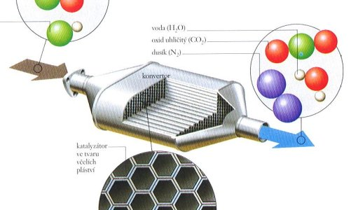
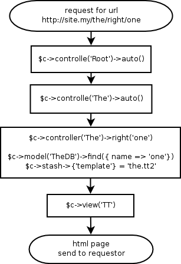
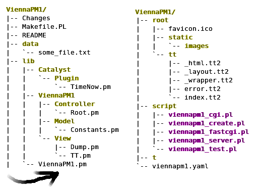
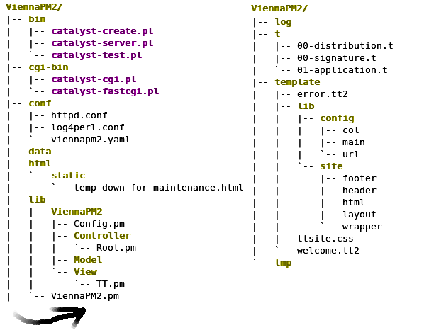
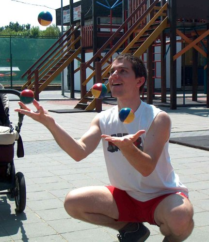

Catalyst tricks
Jozef

Short intro to Catalyst

- Catalyst = MVC web framework
- in Catalyst everything = $c
$c->model() - use base 'Catalyst::Model';
$c->view() - use base 'Catalyst::View';
$c->controller() - use base 'Catalyst::Controller';
- elegant way to have a tool organized
web request flowchart

$c methods
build-in
- $c->config->{} - hash ref of configuration variables
- $c->stash->{} - hash ref of temporary (per request) variables
- $c->uri_for('/') - get http url for catalyst uri
- $c->log->debug - logging function
- ...
$c methods
others come from plugins
- $c->session - hash of session variables
$c->flash - hash of temporary session variables
Catalyst::Plugin::Session - $c->authenticate
Catalyst::Plugin::Authentication - $c->require_ssl
Catalyst::Plugin::RequireSSL - and much more...
see Catalyst::Manual::Plugins
What is a $c->view()?
package ViennaPM1::View::Dump;
use base 'Catalyst::View';
use File::Slurp;
sub render {
my ($self, $c, $dump_name) = @_;
$dump_name = $c->config->{'View::Dump'}->{'path'}.'/'.$dump_name;
return read_file($c->path_to($dump_name).'');
}
sub process {
my ($self, $c) = @_;
$c->response->content_type('text/plain');
$c->response->body(
$self->render($c, $c->stash->{'template'})
);
return 1;
}
1;
What is a $c->model()?
package ViennaPM1::Model::Constants;
use base 'Catalyst::Model';
my %constants = ( 'p' => 'perl', 'm' => 'mongers' );
sub named {
my ($self, $name) = @_;
die 'no such constatnt' if not exists $constants{$name};
return $constants{$name};
}
sub names {
return join ', ', keys %constants;
}
1;
What is a $c->controller()?
package ViennaPM1::Controller::Root;
use base 'Catalyst::Controller';
__PACKAGE__->config->{'namespace'} = '';
sub index : Private {
my ( $self, $c ) = @_;
$c->stash->{'message'} =
$c->model('Constants')->names.', generated at: '.$c->time_now;
$c->stash->{'template'} = 'index.tt2';
# default view is called to handle the template
}
sub dump : Local {
my ( $self, $c, $name ) = @_;
$c->stash->{'template'} = $name;
$c->forward('View::Dump');
}
1;
What is a plugin after all?
- plugin can execute stuff at setup time
- plugin can add methods to the $c
- and this is why everything in Catalyst is $c
- let's have an example
Plugin
package Catalyst::Plugin::TimeNow;
use POSIX 'strftime';
sub setup {
my $c = shift;
$c->log->debug('Now we have: '.time_now($c));
$c->NEXT::setup( @_ );
}
sub time_now {
my $c = shift;
my $time_format = $c->config->{'TimeNow'}->{'format'} || '%a %b %e %H:%M:%S %Y';
return strftime $time_format, localtime;
}
1;
the Glue
package ViennaPM1;
use Catalyst::Runtime '5.70';
my @plugins;
BEGIN {
push(@plugins, '-Debug') if $ENV{'IN_DEBUG_MODE'};
push(@plugins, qw(
ConfigLoader
DefaultEnd
Static::Simple
TimeNow
));
}
use Catalyst @plugins;
__PACKAGE__->setup;
1;
Catalyst folder tree

Catalyst customized folder tree

DBIx::Class
- Do you use it? "it" => ORM
- $c->model('DBIC::User')->find()
$schema->resultset('user')->find() - Metaprogramming is the writing of computer programs that write or manipulate other programs (or themselves) as their data or that do part of the work during compile time that is otherwise done at run time. In many cases, this allows programmers to get more done in the same amount of time as they would take to write all the code manually. (Wikipedia)
- YAPC 2007 Yuval Kogman (nothingmuch) - Object Meta Programming
- DBIx::Class, Moose, Class::Accessor, ...
DBIx::Class example
package ViennaPM1::DBIC::Monger;
use base 'DBIx::Class';
__PACKAGE__->load_components(qw{PK::Auto ResultSetManager Core});
__PACKAGE__->table('mongers');
__PACKAGE__->add_columns(qw{
monger_id
name
cpan_id
status
life_style_id
});
__PACKAGE__->set_primary_key('monger_id');
__PACKAGE__->sequence('mongers_monger_id_seq');
__PACKAGE__->might_have( 'personal_life' => 'ViennaPM1::PersonalLife', 'monger_id');
__PACKAGE__->has_many ( 'presentations' => 'ViennaPM1::Presentation', 'monger_id');
__PACKAGE__->belongs_to( 'life_style' => 'ViennaPM1::LifeStyle', 'life_style_id');
__PACKAGE__->add_unique_constraint(
uniq_cpan_id => [ qw{cpan_id} ]
);
# AND CONTINUES ...
DBIx::Class example
sub with_cpan_id : ResultSet {
my ($self, $cpan_id) = @_;
return = $self->find({
cpan_id => $cpan_id
}, { key => 'uniq_cpan_id'});
}
sub promote_to_guru {
my $self = shift;
$self->status('GURU');
$self->update;
}
sub is_active {
my $self = shift;
return 1 if $self->status ne 'DISABLED';
return 0;
}
1;
What's so great?
For each table
- we have an object for every row in the table
my $monger = $c->model('DBIC::Monger')->with_cpan_id('domm'); - relations between tables are easily and clearly defined
print $monger->life_style->name;
- common select cases predefined
- common checks/modifications predefined
$monger->promote_to_guru;
$monger->delete if not $monger->is_active;
- and everything can be commented in a pod
Let's go even further away from Catalyst
pull the trigger, feel the click,
no further danger
- foreign references
$c->model('DBIC::Monger')->with_cpan_id('domm')->delete;will remove also records of his life style and personal life! :) - pl/SQL is not that complex
- pl/Perl in extreme cases (thank you PostgreSQL)
- this will keep the job of checking data integrity
inside the database,
no matter who or how will access it
Little summary
what we have:
- data integrity guarded by database
- data manipulation using well defined objects
- url dispatch, control, data preparing by $c->controller
- response contructed by $c->view
some templating system (Template Toolkit?)
we have the application/tool design before we even started :)
Time for some real tricks

Replace 'please come back later'
- in debug mode the error "output" is fine, but please come back later ;)
- the trick is to have $c->finalize_error
- sub finalize_error {} in the ViennaPM1.pm
- plugin that inherits finalize_error function
two types of errors
- what we want is to have our template header.tt + footer.tt + site.css look also for errors
- with code/syntax errors we can call $c->view('TT')->render( ...
- for unhadled actions like wrong url we can do
$c->response->redirect($c->uri_for('/'))
having flash variable set - Catalyst::Plugin::CustomErrorMessage
$c for scripts
access to $c->controller()
- we want to write script that will notify users about their account expiration, some actions that they need to take, or just start some daily data processing
- we want to launch some action triggered by email, same as from web.
- we use $c->controller('The')->right($c, )
access to $c->model()
- same db login config for webapp and scripts
$c for scripts
example
- $c->controller('Email')->send($c, {}) for sending emails
- it will use $c->view('EmailTT') to construct the html email body
- we can use it for both web part and the script part
- it will use the same code
how?
- with a plugin :)
- Catalyst::Plugin::CommandLine
authentication with Client Certificates
Why?
- because i HATE passwords :)
- no (stupid?) questions needed
- more secure than passwords
Why not?
- there is no OCSP for standard apache
(Online Certificate Status Protocol) - there is no OCSP in CPAN (!!!) neither
authentication with Client Certificates
httpd.conf
SSLCertificateKeyFile (...)/ssl/Server.key
SSLCACertificateFile (...)/ssl/SomeCertificationAuthority.crt
SSLCARevocationFile (...)/ssl/LatestCRL.pem.crl
<Location /login>
SSLVerifyClient optional
SSLVerifyDepth 1
SSLOptions +StdEnvVars
# PerlOptions +SetupEnv
</Location>
with "+SetupEnv" catalyst is confused
authentication with Client Certificates
$c->controller('Root')->login()
# need this "hack" to populate env with SSL
# could be done with "PerlOptions +SetupEnv" httpd.conf option but
# that will confuse catalyst and $c->uri_for() will not work properly
$c->apache->subprocess_env if can $c, 'apache';
if ((exists $ENV{'SSL_CLIENT_VERIFY'})
and ($ENV{'SSL_CLIENT_VERIFY'} eq 'SUCCESS')) {
$c->stash->{'cert_email'} = $ENV{'SSL_CLIENT_S_DN_Email'};
$c->stash->{'cert_name'} = $ENV{'SSL_CLIENT_S_DN_CN'};
my $autologin_user =
$c->default_auth_store->get_user($c->stash->{'cert_email'});
$c->set_authenticated($autologin_user) if ($autologin_user);
}
Catalyst session bug in Debian Etch
- if there is no data in the $c->session hash ref
the next time you load a page the session expires - so there is chance 1:2 that you will loose the
next session data as they are written to expired session - workaround is to always set something to $c->session
- in $c->controller('root')->auto()
-
#workaround for buggy Catalyst::Plugin::Session that expires session cookie once it has no data $c->session->{'Catalyst::Plugin::Session'} = 'bug';
Temporary down
httpd.conf
Alias /static (...)/root/static <Location /> SetHandler modperl PerlResponseHandler ViennaPM1 </Location> <Location /static> SetHandler default-handler </Location> # RedirectMatch "^/(?!static/)" /static/temp-down-for-maintenance.html
$c->controller('Email')
methods
- sub list : Local {
table with "Send Time, Created by, To, Cc, Bcc, Subject" - sub show : Local {
show's the exact email - sub show_template : Local {
show's email template - sub send : Private {
private method to send email - sub resend : Local {
send previous email again
db history
session_info table
__PACKAGE__->config(
schema_class => 'ViennaPM1::DBIC',
connect_info => [
$config->{'db'}->{'dbi_dsn'},
$config->{'db'}->{'username'},
$config->{'db'}->{'password'},
{
AutoCommit => 1,
on_connect_do => [
'CREATE TEMPORARY TABLE session_info (modified_by text, session_id text);',
"INSERT INTO session_info (modified_by, session_id) VALUES ('".basename($0)."', '".$PID."');",
],
},
],
);
session_info up-to-date
$c->controller('Root')->auto
if ($c->user_exists) {
$c->model('DBIC::Session_Info')->modified_by($c->session->{'person'}->{'employeeNumber'});
}
else {
$c->model('DBIC::Session_Info')->modified_by(undef);
}
$c->model('DBIC::Session_Info')->session_id($c->sessionid);
history_emails_trigger()
CREATE OR REPLACE FUNCTION history_emails_trigger() RETURNS TRIGGER AS $$
DECLARE
v_modified_by history_emails.created_by%TYPE;
BEGIN
SELECT modified_by
INTO v_modified_by
FROM session_info;
new.created_by := v_modified_by;
RETURN new;
END;
$$ LANGUAGE plpgsql;
CREATE TABLE history
column changes history
CREATE TABLE history (
history_id SERIAL,
session_id VARCHAR NOT NULL,
modified_by VARCHAR,
table_name VARCHAR NOT NULL,
event VARCHAR NOT NULL,
event_timestamp TIMESTAMP NOT NULL DEFAULT CURRENT_TIMESTAMP,
comment VARCHAR NULL,
old_values VARCHAR NULL,
new_values VARCHAR NULL,
CHECK (event in ('INSERT', 'UPDATE', 'DELETE')),
CHECK (old_values IS NOT NULL OR new_values IS NOT NULL),
PRIMARY KEY (history_id)
);
history_trigger()
AFTER INSERT OR UPDATE ON
BEFORE DELETE ON
CREATE OR REPLACE FUNCTION history_trigger() RETURNS TRIGGER AS $$
#global variables
my $table_name = $_TD->{'relname'};
my $event = $_TD->{'event'};
# elog(NOTICE, $event.' '.$table_name);
my $session_info_query = spi_query(qq{
SELECT session_id, modified_by
FROM session_info;
});
my $session_info = spi_fetchrow($session_info_query);
elog(ERROR, "history_trigger: No session info row") if not defined $session_info;
my $session_id = (defined $session_info->{'session_id'}
? "'".$session_info->{'session_id'}."'" : 'NULL');
my $modified_by = (defined $session_info->{'modified_by'}
? "'".$session_info->{'modified_by'}."'" : 'NULL');
history_trigger() purpouse
what we have
- %{$_TD->{'new'}}
- %{$_TD->{'old'}}
- $_TD->{'event'}
we can generate
- $comment
- $old_values
- $new_values
spi_exec_query()
my $history_insert = spi_exec_query(qq{
INSERT INTO history (
session_id,
modified_by,
table_name,
event,
comment,
old_values,
new_values
)
VALUES (
$session_id,
$modified_by,
'$table_name',
'$event',
$comment,
$old_values,
$new_values
)
});
benefits from history
- we can show comments to users as history changes
- we know who/what changed what
- for paranoiacs owner of the triggers and tables can be
different than the application user so nobody will be able
to change things without a "trace" - in case of a disaster we can recover from changes from
single source.
And that's it...
Questions?